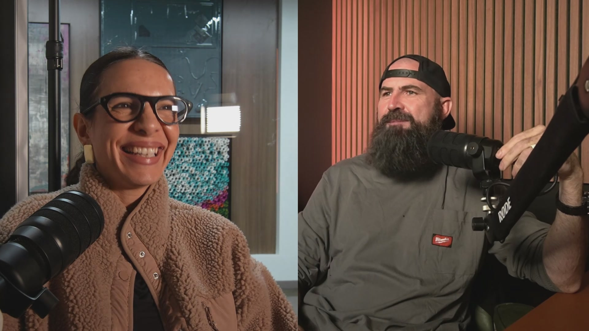

What they build
- Brand identity and positioning
- Short-form content and personal-brand media
- Visibility and authority across social
- Ads and lead capture behind the attention
The Social Hack
The Social Hack builds the brand, content and visibility that make service businesses impossible to ignore, then the systems that turn that attention into booked work.
Husband. Wife. Agency.
I'm the founder and brand builder. My wife, Nara Wiggins, is the Creative Director: she runs the entire Social Hack team.
We learned this together in Brazil, then tested it on our own companies first. The same playbook that built the Charlie Company audience is what The Social Hack runs for service businesses.

The Trench Report
One email. What I'm building, what broke, and what I learned fixing it. No fluff, no spam, no selling you a dream.